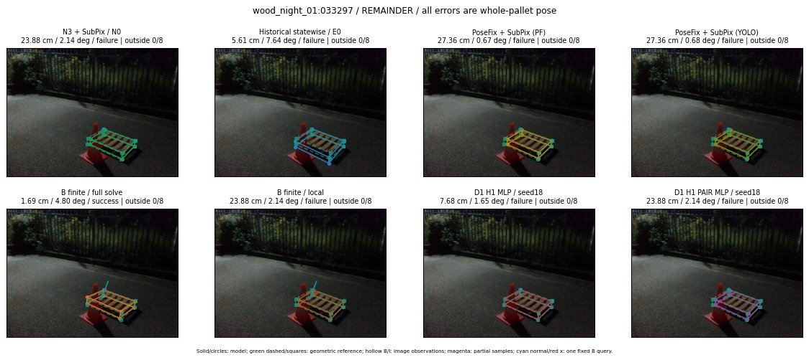

Whole-pallet pose errors; reference is a fixed geometric annotation, not certified physical GT.

Scores are uncalibrated logits. N0 retention is a numerical pose alias; it differs from H0 none or B fallback. B/I and profiles in baseline/B panels are original observations; L panels use new D1 observations. Only one deterministic supported B query is shown in a thumbnail; full support counts are below. Grey privacy rectangles edit the display copy only and are unrelated to O states; all observations were measured on original pixels. Thumbnails use JPEG quality85; detailed scientific panels are PNG.
| Method | Whole pose / cm, deg | Actual source | Selected ID | Score | Archived candidates | Eligible | N0 retained | H0 none | Fallback | Finite profiles |
|---|---|---|---|---|---|---|---|---|---|---|
| Raw YOLO + F | 26.38 cm / 4.23 deg / failure | OTHER | None | N/A | N/A | N/A | False | N/A | None | N/A |
| N3 + SubPix / N0 | 23.88 cm / 2.14 deg / failure | N0 | None | N/A | N/A | N/A | True | N/A | None | N/A |
| Historical statewise / E0 | 5.61 cm / 7.64 deg / failure | E0_REGENERATED | None | N/A | N/A | N/A | False | N/A | False | N/A |
| PoseFix raw | 25.41 cm / 2.56 deg / failure | OTHER | None | N/A | N/A | N/A | False | N/A | None | N/A |
| PoseFix + SubPix (PF) | 27.36 cm / 0.67 deg / failure | OTHER | None | N/A | N/A | N/A | False | N/A | False | historical support records 9; finite audit N/A |
| PoseFix + SubPix (YOLO) | 27.36 cm / 0.68 deg / failure | OTHER | None | N/A | N/A | N/A | False | N/A | False | historical support records 9; finite audit N/A |
| Historical L, seed18 | 23.88 cm / 2.14 deg / failure | N0 | N0 | N/A | 49 | 48 | True | True | True | N/A |
| Historical B fixed bank | 1.69 cm / 4.80 deg / success | OTHER | G10/ORIGINAL_WD/sample/10 | N/A | N/A | N/A | False | N/A | False | N/A |
| Historical B full | 7.68 cm / 8.87 deg / failure | OTHER | NEW/B/ORIGINAL_WD/h3/G10/ORIGINAL_WD/sample/27/PROPOSED_NATIVE_YAW_3 | N/A | N/A | N/A | False | N/A | False | N/A |
| Historical edge full | 97.58 cm / 17.94 deg / failure | OTHER | NEW/edge/ORIGINAL_WD/h0/G10/ORIGINAL_WD/sample/0/PROPOSED_NATIVE_YAW_0 | N/A | N/A | N/A | False | N/A | False | N/A |
| Historical AB full | 7.71 cm / 8.86 deg / failure | OTHER | NEW/AB/SWAPPED_WD/h3/G10/SWAPPED_WD/sample/2/PROPOSED_NATIVE_YAW_3 | N/A | N/A | N/A | False | N/A | False | N/A |
| B finite / fixed bank | 1.69 cm / 4.80 deg / success | OTHER | G10/ORIGINAL_WD/sample/10 | N/A | N/A | N/A | False | N/A | False | 12/12 |
| B finite / full solve | 1.69 cm / 4.80 deg / success | OTHER | G10/ORIGINAL_WD/sample/10 | N/A | N/A | N/A | False | N/A | False | 12/12 |
| B finite / local | 23.88 cm / 2.14 deg / failure | N0 | N0 | N/A | N/A | N/A | True | N/A | True | N/A |
| Edge finite / full solve | 26.12 cm / 9.92 deg / failure | OTHER | G10/ORIGINAL_WD/sample/8 | N/A | N/A | N/A | False | N/A | False | 12/12 |
| D0 H0 MLP / seed18 | 23.88 cm / 2.14 deg / failure | N0 | N0 | 0.26119914650917053 | 36 | 35 | True | True | True | N/A |
| D0 H0 MLP / seed19 | 23.88 cm / 2.14 deg / failure | N0 | N0 | 1.001033067703247 | 36 | 35 | True | True | True | N/A |
| D0 H0 MLP / seed20 | 23.88 cm / 2.14 deg / failure | N0 | N0 | -0.9879546165466309 | 36 | 35 | True | True | True | N/A |
| D0 H1 MLP / seed18 | 5.61 cm / 7.64 deg / failure | OTHER | G10/ORIGINAL_WD/endpoint/11 | -4.178214073181152 | 36 | 35 | False | False | False | N/A |
| D0 H1 MLP / seed19 | 4.91 cm / 5.10 deg / failure | OTHER | WD0/ORIGINAL_WD/sample/7 | -4.323639392852783 | 36 | 35 | False | False | False | N/A |
| D0 H1 MLP / seed20 | 5.61 cm / 7.64 deg / failure | OTHER | G10/ORIGINAL_WD/endpoint/11 | -4.133554458618164 | 36 | 35 | False | False | False | N/A |
| D1 H0 MLP / seed18 | 23.88 cm / 2.14 deg / failure | N0 | N0 | 4.265422821044922 | 36 | 35 | True | True | True | N/A |
| D1 H0 MLP / seed19 | 23.88 cm / 2.14 deg / failure | N0 | N0 | 4.180160045623779 | 36 | 35 | True | True | True | N/A |
| D1 H0 MLP / seed20 | 23.88 cm / 2.14 deg / failure | N0 | N0 | 3.7000575065612793 | 36 | 35 | True | True | True | N/A |
| D1 H1 MLP / seed18 | 7.68 cm / 1.65 deg / failure | OTHER | WD0/ORIGINAL_WD/sample/4 | -2.664860248565674 | 36 | 35 | False | False | False | N/A |
| D1 H1 MLP / seed19 | 4.91 cm / 5.10 deg / failure | OTHER | WD0/ORIGINAL_WD/sample/7 | -2.939486265182495 | 36 | 35 | False | False | False | N/A |
| D1 H1 MLP / seed20 | 4.91 cm / 5.10 deg / failure | OTHER | WD0/ORIGINAL_WD/sample/7 | -2.751215934753418 | 36 | 35 | False | False | False | N/A |
| D1 H1 ROLE AFFINE / seed18 | 23.88 cm / 2.14 deg / failure | N0 | N0 | -0.046942152082920074 | 36 | 35 | True | False | False | N/A |
| D1 H1 ROLE AFFINE / seed19 | 23.88 cm / 2.14 deg / failure | N0 | N0 | 0.2205236554145813 | 36 | 35 | True | False | False | N/A |
| D1 H1 ROLE AFFINE / seed20 | 23.88 cm / 2.14 deg / failure | N0 | N0 | 0.23273392021656036 | 36 | 35 | True | False | False | N/A |
| D1 H1 PAIR MLP / seed18 | 23.88 cm / 2.14 deg / failure | N0 | N0 | -1.198280930519104 | 36 | 2 | True | False | False | N/A |
| D1 H1 PAIR MLP / seed19 | 23.88 cm / 2.14 deg / failure | N0 | N0 | -1.3784903287887573 | 36 | 2 | True | False | False | N/A |
| D1 H1 PAIR MLP / seed20 | 23.88 cm / 2.14 deg / failure | N0 | N0 | -1.4356708526611328 | 36 | 2 | True | False | False | N/A |
| D1 H1 PAIR ROLE AFFINE / seed18 | 23.88 cm / 2.14 deg / failure | N0 | N0 | -0.34537872672080994 | 36 | 2 | True | False | False | N/A |
| D1 H1 PAIR ROLE AFFINE / seed19 | 23.88 cm / 2.14 deg / failure | N0 | N0 | -0.429625928401947 | 36 | 2 | True | False | False | N/A |
| D1 H1 PAIR ROLE AFFINE / seed20 | 23.88 cm / 2.14 deg / failure | N0 | N0 | -0.35275644063949585 | 36 | 2 | True | False | False | N/A |
| Regenerated common E0 | 5.61 cm / 7.64 deg / failure | E0_REGENERATED | E0_REGENERATED | N/A | N/A | N/A | False | N/A | False | N/A |